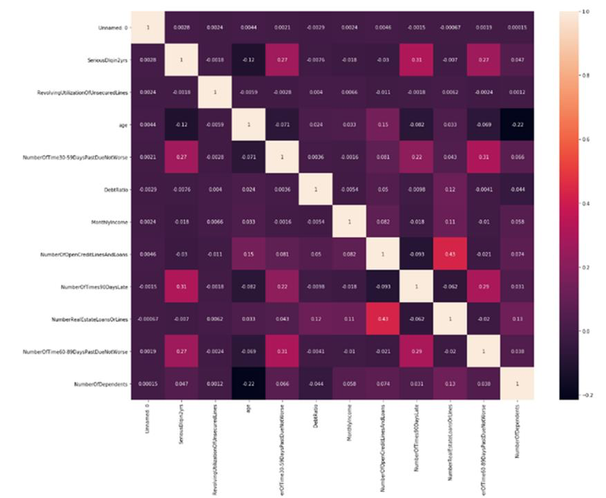
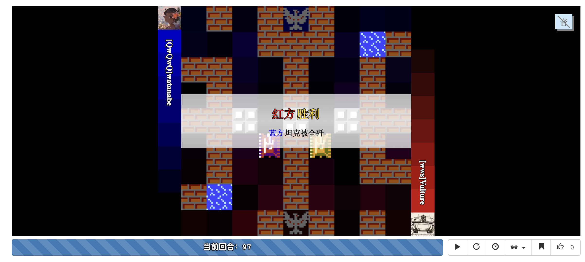

Weishuai Wang
I am a senior student at Peking University, where I work on machine learning and computer vision, etc.
Recent Projects
Project Page | Website Of Competiton | slides
In this dataset, we are presented with a large number of artwork images and associated attributes of the art. Multiple modalities can be expected and the camera sources are unknown. The photographs are often centered for objects, and in the case where the museum artifact is an entire room, the images are scenic in nature.
Each object is annotated by a single annotator without a verification step. Annotators were advised to add multiple labels from an ontology provided by The Met, and additionally are allowed to add free-form text when they see fit. They were able to view the museum's online collection pages and advised to avoid annotating labels already present. The attributes can relate to what one "sees" in the work or what one infers as the object's "utility."This project uses leap motion to recognize our gesture(Rock / Scissors / Paper), and it was used as an interactive game once a time at the entrance of No.5 courtyard of Jingyuan, Peking University.

Project Page | Website Of Competiton | slides
This project is a fantastic solution of the classic Kaggle competition using the data set Give Me Some Credit. The goal of this competition is to build a model that borrowers can use to help make the best financial decisions(improve on the state of the art in credit scoring by predicting the probability that somebody will experience financial distress in the next two years). I compared different models and chose a best one for this competition. From this project, I get an intuition of what Machine Learning is.
Like other machine learning tasks, this project includes Data Preprocessing, Dataset Analysis, Model-building and Optimization. A discussion of oversampling and downsampling is also included in this project.
Project Page | Online Document
This is a sysY to Risc-V compiler (based on C-language) which I implemented it myself. There are three steps to implement this compiler. Firstly, I compiled sysY code to get eeyore code. Secondly, I compiled eeyore code to tigger code. Finally, I got risc-V from the tigger code.

A front-end monkey testing suite based on Python webdriver. Watch out for the flying pixies!

This is my first python game based on hardware! With the help of mpython board, you can play Flappy Bird with your VOICE!

This is a tankgame AI based on botzone. In this project, a bot named Vulture is created to win as many games as possible. We considered a large number of boundary conditions to make it get a better performance. The bot is still used today to help the freshman of PKU choosing this course to optimize their bot and have a better score.